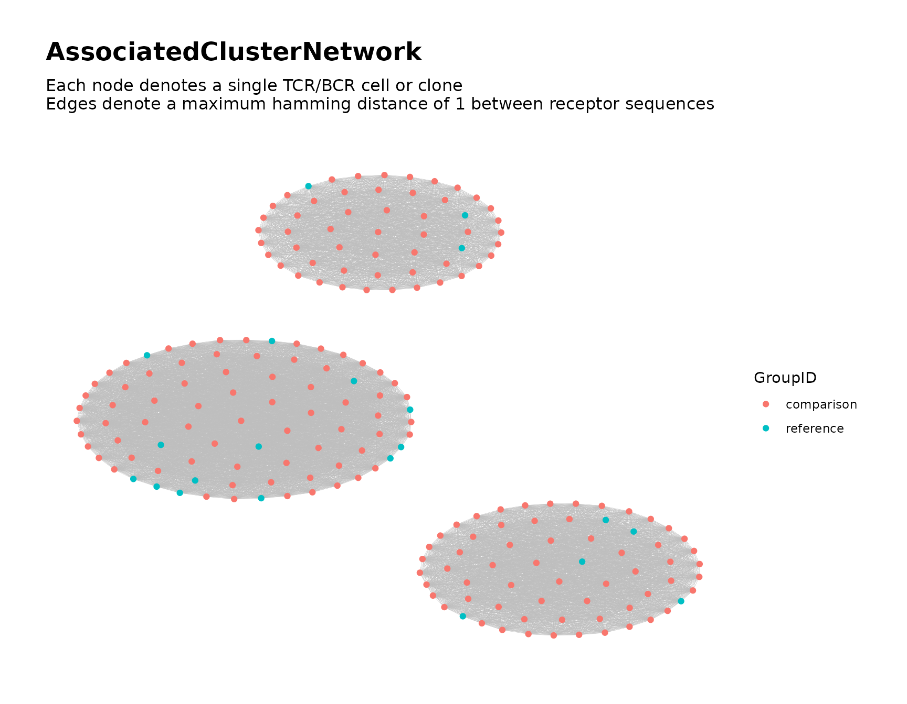
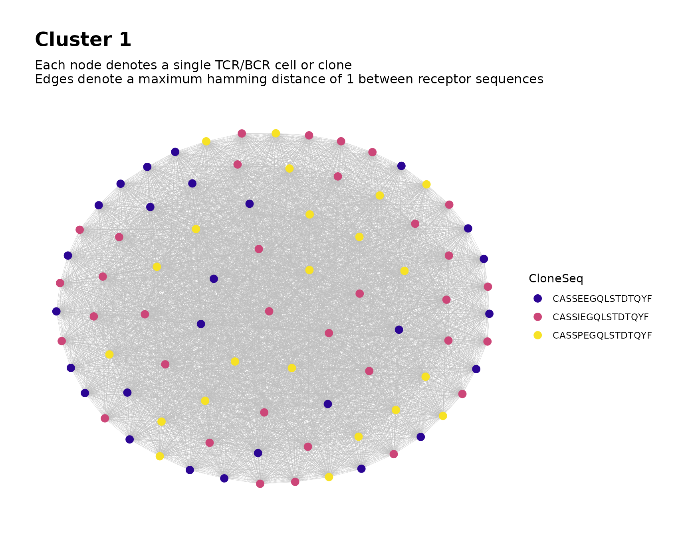
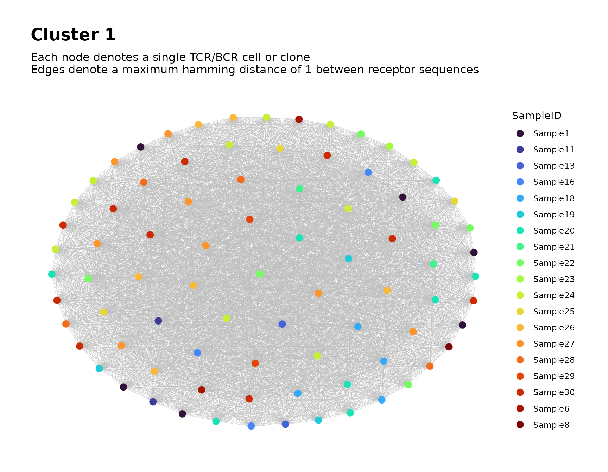

Searching for Associated TCR/BCR Clusters
Source:vignettes/associated_clusters.Rmd
associated_clusters.RmdIntroduction
Given multiple samples of bulk Adaptive Immune Receptor Repertoire
Sequencing (AIRR-Seq) data, the NAIR package can be used to
search for TCR/BCR clusters associated with a binary variable of
interest, such as a disease condition, treatment or clinical
outcome.
We first provide a brief conceptual overview, followed by a demonstration in which we explain the process in greater detail.
Overview of Process
- Identify associated sequences. Divide the subjects into two groups based on the two levels of the binary variable. Identify TCR/BCR sequences that exhibit a statistically significant difference in frequency between the two groups using Fisher’s exact test.
- Identify clones with sequences similar to the associated sequences. For each associated sequence, all sequences that fall within a certain distance (e.g., those that differ by at most one amino acid) comprise its neighborhood. From all samples, identify all clones whose sequences belong to this neighborhood.
- Construct global network using identified clones and perform clustering. Combine the clones from all neighborhoods into a single global network. Perform cluster analysis and assign membership to the global clusters. These clusters are considered as the associated clusters.
- Perform additional tasks such as labeling the clusters in the global network plot and analyzing particular clusters of interest.
Simulate Data for Demonstration
We simulate some toy data for demonstration.
As our binary variable of interest, we consider a single treatment factor with two levels, labeled treatment and control.
In each of the two groups, we simulate 15 samples, each containing 30 observations. The generation probabilities of the possible sequences are fixed within each group. In order to simulate the treatment effect, the generation probabilities of certain sequences differ substantially between the two groups.
library(NAIR)
#> Welcome to the NAIR package. Get started using `vignette("NAIR", package = "NAIR")` or by visiting https://mlizhangx.github.io/Network-Analysis-for-Repertoire-Sequencing-/
data_dir <- tempdir()
dir_input_samples <- file.path(data_dir, "input_samples")
dir.create(dir_input_samples, showWarnings = FALSE)
# Number of samples by control/treatment group
samples_c <- samples_t <- 15
samples <- samples_c + samples_t
sample_size <- 30 # (seqs per sample)
# sequences (first five are chosen to be associated with treatment)
base_seqs <-
c("CASSGAYEQYF", "CSVDLGKGNNEQFF",
"CASSIEGQLSTDTQYF", # 3 of the associated
"CASSEEGQLSTDTQYF", # sequences differ by
"CASSPEGQLSTDTQYF", # only one amino acid
"RASSLAGNTEAFF", "CASSHRGTDTQYF", "CASDAGVFQPQHF"
)
# relative generation probabilities by control/treatment group
pgen_c <- matrix(rep(c(rep(1, 5), rep(30, 3)), times = samples_c),
nrow = samples_c, byrow = TRUE)
pgen_t <- matrix(rep(c(1, 1, rep(1/3, 3), rep(2, 3)), times = samples_t),
nrow = samples_t, byrow = TRUE)
pgen <- rbind(pgen_c, pgen_t)
simulateToyData(
samples = samples,
sample_size = sample_size,
prefix_length = 1,
prefix_chars = c("", ""),
prefix_probs = cbind(rep(1, samples), rep(0, samples)),
affixes = base_seqs,
affix_probs = pgen,
num_edits = 0,
output_dir = dir_input_samples,
no_return = TRUE
)
#> [1] TRUEEach sample is saved in a separate file using the .rds file format.
The files are named “Sample1.rds”,
“Sample2.rds”, etc. The file path of their directory is
saved to the R environment variable dir_input_samples for
later reference.
The first few rows of the data for the first sample appear as follows:
# View first few rows of data for sample 1
head(readRDS(file.path(dir_input_samples, "Sample1.rds")))
#> CloneSeq CloneFrequency CloneCount SampleID
#> 1 CASDAGVFQPQHF 0.02606559 2832 Sample1
#> 2 CASDAGVFQPQHF 0.03718396 4040 Sample1
#> 3 CASSHRGTDTQYF 0.03182726 3458 Sample1
#> 4 CASDAGVFQPQHF 0.04615781 5015 Sample1
#> 5 RASSLAGNTEAFF 0.06006498 6526 Sample1
#> 6 CASDAGVFQPQHF 0.03363123 3654 Sample1Step 1: Find Associated Sequences
The first step is to conduct a systematic search for associated
sequences within the provided samples using
findAssociatedSeqs().
This search is a two-stage procedure.
The unique receptor sequences are first filtered according to basic criteria in order to narrow the list of candidates.
For each candidate sequence, we then compute the P-value for Fisher’s exact test of independence between the binary variable of interest and the observed presence of the sequence within a sample/subject. The user specifies the P-value cutoff below which an association is detected.
Below, we explain the usage and behavior of
findAssociatedSeqs().
Search Criteria for Associated Sequences
Presented below are parameters that control the criteria used when searching for associated sequences. These include several filter criteria used to determine which sequences are considered for testing, as well as the P-value cutoff below which an association is detected by Fisher’s exact test.
Sample Membership
By default, only sequences that appear in at least five samples will
be considered. This can be changed by setting the
min_sample_membership argument to a different value.
Setting the value to NULL bypasses this check.
Sequence Length
By default, only sequences that contain at least seven characters
will be considered. This can be changed by setting the
min_seq_length argument to a different value. Setting the
value to NULL bypasses this check.
Sequence Content
Sequences can be filtered based on the character content they contain. It is recommended to filter out sequences containing special characters that are invalid for use in file names.
By default, sequences containing any of the characters
*, | or _ will be excluded from
consideration. This can be changed using the drop_matches
argument, which accepts a character string containing a regular
expression that specifies the pattern of content to search for (see
?regex). The content of each sequence is checked for a
match to this pattern using grep(). If a match is found,
the sequence is excluded from consideration. Setting the value to
NULL bypasses this check.
P-value Cutoff
By default, sequences with a P-value below 0.05 on Fisher’s exact
test are included in the output of findAssociatedSeqs().
The cutoff can be set to a different value using the
pval_cutoff argument. The lower the cutoff value, the
stronger the evidence of an association is required for a sequence to be
included in the output.
It should be noted that the sequences returned by
findAssociatedSeqs() are ordered by P-value, and any subset
of them can be used in step2. Thus it is not
necessary to rerun findAssociatedSeqs() in order to impose
a stricter P-value cutoff. The user can instead subset the results in
order to use only those sequences below a specified P-value.
Specify Input Data for Step 1
File Paths of Sample Data
The main argument of findAssociatedSeqs() is the
file_list argument, which accepts a vector containing file
paths. Each file is assumed to contain the AIRR-Seq data for a single
sample, with observations indexed by row.
Below, we prepare the vector input_files to be provided
to the file_list argument of
findAssociatedSeqs():
# input files for step 1 (one per sample)
input_files <- file.path(dir_input_samples,
paste0("Sample", 1:samples, ".rds")
)
head(input_files)
#> [1] "/tmp/Rtmp9S53xJ/input_samples/Sample1.rds"
#> [2] "/tmp/Rtmp9S53xJ/input_samples/Sample2.rds"
#> [3] "/tmp/Rtmp9S53xJ/input_samples/Sample3.rds"
#> [4] "/tmp/Rtmp9S53xJ/input_samples/Sample4.rds"
#> [5] "/tmp/Rtmp9S53xJ/input_samples/Sample5.rds"
#> [6] "/tmp/Rtmp9S53xJ/input_samples/Sample6.rds"File Format of Sample Data
The file format of the input files for
findAssociatedSeqs() is specified using the
input_type parameter. The supported formats include
"rds", "rda", "csv", as well as
files that can be read using the read.table() function,
such as "tsv" and "txt".
Our samples are stored in .rds files, so we use
input_type = "rds".
For text formats such as "csv", "tsv" and
"txt", users can specify the separation option by utilizing
the sep argument. The default setting sep = ""
accommodates all forms of white space, i.e., one or more spaces, tabs,
newlines or carriage returns. In addition, it is important to note that
the first line of the data is assumed to be the header by default. To
disable this behavior and treat the first line as data, users must set
the header parameter to FALSE.
For the "rda" (Rdata) format, the
data_symbols argument is used to specify the name of each
sample’s AIRR-Seq data frame within the Rdata file (i.e., the name of
the data frame as it will appear in the R environment when the Rdata
file is loaded). The argument accepts a character string. This requires
that each sample’s data frame has the same name within its respective
Rdata file. For example, if each sample’s data frame is named
mydataframe and saved using the command
save(mydataframe, file = myfilepath), where the file path
myfilepath is different for each sample, then we would set
data_symbols = "mydataframe".
Sequence Column in Sample Data
The seq_col argument is used to specify the column
containing the clone sequences in the input data for each sample. The
argument accepts either the column name or column index.
In our simulated data, the column containing the clone sequences is
named CloneSeq. Hence we specify
seq_col = "CloneSeq" when calling
findAssociatedSeqs().
Assigning Samples to Groups
The group_ids argument is used to assign each sample to
one of the two groups, representing the two levels of the binary
variable of interest. The argument accepts a vector of the same length
as file_list. Each entry of group_ids is
assigned as a group label to the sample in the corresponding entry of
file_list. Any values may be used for the group labels, but
the vector must contain exactly two unique values.
For instance, in our simulated data, the first half of the samples
belong to the control group, while the second half belong to the
treatment group. Thus, we should assign one group label to the first 15
samples and a different group label to the last 15 samples. Here we
choose to label the first 15 samples as "reference" and the
last 15 samples as "comparison". However, it should be
noted that the results will be unchanged if the labels are reversed, or
if a different pair of labels is used, as long as the first 15 samples
are assigned to one group and the last 15 samples to the other.
The vector we will provide to the group_ids argument of
findAssociatedSeqs() is created below:
# group label assignments for the samples
group_labels <- c(rep("reference", samples_c),
rep("comparison", samples_t))
group_labels
#> [1] "reference" "reference" "reference" "reference" "reference"
#> [6] "reference" "reference" "reference" "reference" "reference"
#> [11] "reference" "reference" "reference" "reference" "reference"
#> [16] "comparison" "comparison" "comparison" "comparison" "comparison"
#> [21] "comparison" "comparison" "comparison" "comparison" "comparison"
#> [26] "comparison" "comparison" "comparison" "comparison" "comparison"Assigning Samples to Subjects (If Applicable)
The subject_ids argument can be used to assign each
sample to a particular subject. The argument accepts a vector of the
same length as file_list. Each entry of
subject_ids is assigned as a subject ID to the sample in
the corresponding entry of file_list.
If the subject_ids argument is omitted, Fisher’s exact
test treats each sample as an independent observational unit. In this
case, the relevant contingency table involves counts of
samples possessing a given sequence.
If subject IDs are provided, each subject’s collection of samples is treated as a single observational unit. The relevant contingency table then involves counts of subjects possessing a given sequence. This allows a sequence to be counted at most once per subject, and results in each subject being counted exactly once in each margin.
Subject IDs should be provided when the binary variable of interest is subject-specific and the data contains multiple samples from a single subject. Subject IDs should be omitted when the binary variable of interest is sample-specific or each sample comes from a different subject.
Clone Frequency Column (Optional)
The freq_col argument can be used to specify the column
in each sample’s data frame that contains the clone frequencies (i.e.,
clone count divided by the sum of the clone counts across all clones in
the sample). The argument accepts either the column name or column
index.
If clone frequencies are provided, the maximum clone frequency
(across all samples) for each associated sequence will be included in
the content of the data frame returned by
findAssociatedSeqs().
Output File Path for Step 1
findAssociatedSeqs() returns a data frame containing the
associated sequences along with some additional information (see the demonstration below).
By default, the data frame returned by
findAssociatedSeqs() is also saved to the current working
directory as a csv file named associated_seqs.csv.
A different file name and/or directory can be specified by providing
a file path to the outfile argument. For example, setting
outfile = "myfile.csv" will save the file to the current
working directory as myfile.csv, while setting
outfile = "~/myfolder/myfile.csv" will save the file within
the subdirectory myfolder located within the current
working directory.
The user can also specify outfile = NULL in order to
prevent the output from being saved.
Demonstration (Step 1)
Execute findAssociatedSeqs()
We execute findAssociatedSeqs() using the inputs we prepared earlier for the file_list and group_ids arguments:
# search across samples for associated sequences using Fisher's exact test
associated_seqs <- findAssociatedSeqs(file_list = input_files,
input_type = "rds",
group_ids = group_labels,
seq_col = "CloneSeq",
min_seq_length = NULL,
drop_matches = NULL,
min_sample_membership = NULL,
pval_cutoff = 0.1,
outfile = NULL
)
#> Data contains 30 samples, 15 of which belong to group reference and 15 of which belong to group comparison.
#> >>> Loading and compiling data from all samples:
#> Loading sample 1: Input data contains 30 rows.
#> Loading sample 2: Input data contains 30 rows.
#> Loading sample 3: Input data contains 30 rows.
#> Loading sample 4: Input data contains 30 rows.
#> Loading sample 5: Input data contains 30 rows.
#> Loading sample 6: Input data contains 30 rows.
#> Loading sample 7: Input data contains 30 rows.
#> Loading sample 8: Input data contains 30 rows.
#> Loading sample 9: Input data contains 30 rows.
#> Loading sample 10: Input data contains 30 rows.
#> Loading sample 11: Input data contains 30 rows.
#> Loading sample 12: Input data contains 30 rows.
#> Loading sample 13: Input data contains 30 rows.
#> Loading sample 14: Input data contains 30 rows.
#> Loading sample 15: Input data contains 30 rows.
#> Loading sample 16: Input data contains 30 rows.
#> Loading sample 17: Input data contains 30 rows.
#> Loading sample 18: Input data contains 30 rows.
#> Loading sample 19: Input data contains 30 rows.
#> Loading sample 20: Input data contains 30 rows.
#> Loading sample 21: Input data contains 30 rows.
#> Loading sample 22: Input data contains 30 rows.
#> Loading sample 23: Input data contains 30 rows.
#> Loading sample 24: Input data contains 30 rows.
#> Loading sample 25: Input data contains 30 rows.
#> Loading sample 26: Input data contains 30 rows.
#> Loading sample 27: Input data contains 30 rows.
#> Loading sample 28: Input data contains 30 rows.
#> Loading sample 29: Input data contains 30 rows.
#> Loading sample 30: Input data contains 30 rows.
#> All samples loaded.
#> Extracting list of unique sequences... Done. 8 unique sequences present.
#> Computing sample membership (this may take a while)... Done.
#> Filtering by Fisher's exact test P-value... Done. 4 sequences remain.
#> All done. Sorting results by Fisher's exact test P-value and returning.Output of findAssociatedSeqs()
findAssociatedSeqs() returns a data frame containing the
associated sequences based on the specified search criteria.
# view first few rows of output
head(associated_seqs)
#> ReceptorSeq fisher_pvalue shared_by_n_samples samples_g0 samples_g1
#> 8 CSVDLGKGNNEQFF 1.052106e-05 18 3 15
#> 7 CASSGAYEQYF 1.157316e-04 17 3 14
#> 4 CASSEEGQLSTDTQYF 5.197401e-03 10 1 9
#> 5 CASSIEGQLSTDTQYF 6.559548e-02 16 5 11
#> label
#> 8 Sequence present in 18 samples (3 in group reference, 15 in group comparison)\nFisher's exact test P-value: 1.05e-05
#> 7 Sequence present in 17 samples (3 in group reference, 14 in group comparison)\nFisher's exact test P-value: 0.000116
#> 4 Sequence present in 10 samples (1 in group reference, 9 in group comparison)\nFisher's exact test P-value: 0.0052
#> 5 Sequence present in 16 samples (5 in group reference, 11 in group comparison)\nFisher's exact test P-value: 0.0656Each row corresponds to a unique receptor sequence. The rows of the data frame are ordered by Fisher’s exact test \(P\)-value.
For the remaining steps, we will only need to use the information in
the ReceptorSeq column. However, the data contains some
additional information:
-
shared_by_n_samples: The number of samples in which the sequence was observed -
samples_g0: Of the samples in which the sequence was observed, the number of samples belonging to the first group -
samples_g1: Of the samples in which the sequence was observed, the number of samples belonging to the second group -
label: A character string summarizing the above information. Also includes the maximum in-sample clone frequency across all samples, if available.
In the above context, the first and second groups are determined by
the first and second unique values of the sample_ids
vector.
The following additional variables will be included if subject IDs
are specified using the subject_ids argument:
-
shared_by_n_subjects: The number of subjects in which the sequence was observed -
subjects_g0: Of the subjects in which the sequence was observed, the number of subjects belonging to the first group -
subjects_g1: Of the subjects in which the sequence was observed, the number of subjects belonging to the second group
Step 2: Find Associated Clones
In the previous step, we used
findAssociatedSeqs() to identify receptor sequences
associated with the binary variable of interest.
The next step is to use findAssociatedClones() to search
across samples and identify all clones with sequences similar to the
associated sequences identified in step 1.
For each associated sequence, we define its neighborhood as the set of all sequences that fall within a specified distance (e.g., a maximum Hamming distance of 1). We then identify all clones (from all samples) whose sequences belong to this neighborhood.
The data for each associated sequence’s neighborhood is then saved to a separate file to be used as an input in step 3.
Specifying the Associated Sequences
The associated sequences are specified via the
assoc_seqs argument, which accepts a character vector
containing the associated sequences.
Typically, the vector provided to assoc_seqs will be the
ReceptorSeq column of the data frame returned by
findAssociatedSeqs(). This considers all of the associated
sequences found in step 1.
However, it may be desirable to consider only a subset of the
sequences returned by findAssociatedSeqs(). The sequences
are ordered by Fisher’s exact test P-value to facilitate reference. For
example, if we had many associated sequences, we could choose to
consider only the 10 with the lowest P-values by specifying
assoc_seqs = associated_seqs$ReceptorSeq[1:10].
Specify Input Data for Step 2
Arguments from Step 1
In order for findAssociatedClones() to conduct its
search, we must provide specifications for our sample data, just as we
did when calling findAssociatedSeqs().
As before, this is done using the following arguments:
file_listinput_typeseq_colgroup_ids-
subject_ids(if applicable)
The user should use the same values for these arguments as they did
when calling findAssociatedSeqs() in step
1.
Custom Sample IDs (Optional)
Each clone’s sample ID is automatically included as a variable in the data for each associated sequence’s neighborhood.
By default, the samples are labeled as "Sample1",
"Sample2", etc., according to their order of appearance in
file_list.
The sample_ids argument allows for custom sample IDs to
be assigned. It accepts a vector of the same length as
file_list. Each entry of sample_ids is
assigned as a sample ID to the sample in the corresponding entry of
file_list.
If subject IDs are provided using the subject_ids
argument, the subject IDs will be included in each neighborhood’s data
frame as a separate variable from the sample ID.
Filtering the Sample Data
The clones from each sample are filtered to remove any irrelevant data. The following arguments provide user control over the filter settings.
min_seq_length
By default, clones with sequences that contain fewer than six
characters will be removed from each sample prior to constructing the
neighborhoods. This can be changed by setting the
min_seq_length argument to a different value. Setting the
value to NULL bypasses this check.
drop_matches
Clones with sequences containing any of the characters
*, | or _ will be removed from
each sample prior to constructing the neighborhoods. This can be changed
using the drop_matches argument, which accepts a character
string containing a regular expression that specifies the pattern of
content to search for (see ?regex). The content of each
clone’s sequence is checked for a match to this pattern using
grep(). If a match is found, the clone is removed before
constructing the neighborhoods. Setting the value to NULL
bypasses this check.
Network Neighborhood Settings
For each associated sequence, its neighborhood includes all sequences that are sufficiently similar to the associated sequence.
The settings below control how the similarity between sequences is measured, as well as how similar a sequence must be to the associated sequence in order to belong to its neighborhood.
Distance Function
The default method for measuring the similarity between TCR/BCR sequences is the Hamming distance. It calculates the number of differences between two sequences of the same length. If the sequences have different lengths, the shorter sequence is extended by adding non-matching characters to make it the same length as the longer sequence.
The Levenshtein distance can be used as an alternative measurement to
determine the similarity between sequences. It calculates the minimum
number of single-character edits (insertions, deletions and
transformations) needed to transform one sequence into the other. This
method is particularly useful for comparing sequences of different
lengths and can account for insertions and deletions. When constructing
a network based on the similarity of CDR-3 nucleotide sequences, it is
preferable to use the Levenshtein distance instead of the default
Hamming distance by setting the argument
dist_type = "levenshtein". However, the Levenshtein
distance requires significantly more computational time than the Hamming
distance, which may be challenging when working with large data sets
having long TCR/BCR sequences.
Distance Cutoff
The distance function specified in the dist_type
argument (the Hamming distance by default) is used to quantify the
similarity between TCR/BCR sequences. The chosen distance measurement
determines a distance between two sequences.
By default, each associated sequence’s neighborhood includes all
sequences whose distance from the associated sequence is at most 1.
However, if users want to adjust this cutoff, the
nbd_radius argument can be set to a different value.
For example, if nbd_radius = 2, then each associated
sequence’s neighborhood will include all sequences whose distance from
the associated sequence is at most 2. The cutoff value controls the
stringency of the neighborhood construction and affects the number of
sequences and clones that belong to each neighborhood.
Output Settings for Step 2
findAssociatedClones() does not return any direct
output. Instead, it saves the data for the associated sequence’s
neighborhoods to files that will be used as inputs in step 3.
For each neighborhood, a data frame is saved to an individual file. The data frame contains one row for each clone in the neighborhood, and it includes variables for each clone’s sample ID, the group ID for its sample, and (if provided) the subject ID for its sample. The following arguments can be used to customize the output.
Variables to Keep From Step 2
By default, each neighborhood’s data frame will include all of the variables (data columns) from each sample’s original input data frame. These variables will be included as metadata for the nodes of the global network in step 3.
In some cases, the user may not wish for all of the original
variables to be included. In this case, the user can specify the
original data they wish to keep. This is done using the
subset_cols argument, which accepts either a vector of
column names or a vector of column indices.
Regardless of the value of subset_cols, the variable for
clone sequence (as specified by the seq_col argument) will
always be included, as will the variables SampleID,
GroupID and (if applicable) SubjectID. An
additional variable AssocSeqs records the associated
sequence of the neighborhood to which each clone belongs.
Any variables included in the output can be used as metadata to color the nodes in graph plots of the global network during step 3.
Output Directory for Step 2
By default, a new directory named
associated_neighborhoods is created within the current
working directory, and the neighborhood data files are saved to this
directory.
A different output directory can be specified using the
output_dir argument. The specified directory will be
created if it does not already exist.
It is recommended to save the output to a new or empty directory. This will simplify the task of inputting these files during step 3.
# output directory for current step
dir_nbds <- file.path(data_dir, "assoc_seq_nbds")Output File Format for Step 2
By default, each neighborhood’s data frame is saved as a csv file.
This can be changed using the output_type argument. Other
valid options include "tsv", "rds" and
"rda".
If files are saved using the "rda" (Rdata) format, each
data frame will be named data in the R environment when its
Rdata file is loaded.
Demonstration (Step 2)
Execute findAssociatedClones()
We execute findAssociatedClones() using the inputs from step 1 for the file_list and group_ids arguments, the associated sequences from step 1, as well as the
output directory file path we created for the current
step:
# Identify clones in a neighborhood around each associated sequence
findAssociatedClones(file_list = input_files,
input_type = "rds",
group_ids = group_labels,
seq_col = "CloneSeq",
assoc_seqs = associated_seqs$ReceptorSeq,
min_seq_length = NULL,
drop_matches = NULL,
output_dir = dir_nbds
)
#> <<< Beginning search for associated clones >>>
#> Processing sample 1 of 30 (Sample1):
#> Input data contains 30 rows.
#> Finding clones in a neighborhood of each associated sequence... Done.
#> Processing sample 2 of 30 (Sample2):
#> Input data contains 30 rows.
#> Finding clones in a neighborhood of each associated sequence... Done.
#> Processing sample 3 of 30 (Sample3):
#> Input data contains 30 rows.
#> Finding clones in a neighborhood of each associated sequence... Done.
#> Processing sample 4 of 30 (Sample4):
#> Input data contains 30 rows.
#> Finding clones in a neighborhood of each associated sequence... Done.
#> Processing sample 5 of 30 (Sample5):
#> Input data contains 30 rows.
#> Finding clones in a neighborhood of each associated sequence... Done.
#> Processing sample 6 of 30 (Sample6):
#> Input data contains 30 rows.
#> Finding clones in a neighborhood of each associated sequence... Done.
#> Processing sample 7 of 30 (Sample7):
#> Input data contains 30 rows.
#> Finding clones in a neighborhood of each associated sequence... Done.
#> Processing sample 8 of 30 (Sample8):
#> Input data contains 30 rows.
#> Finding clones in a neighborhood of each associated sequence... Done.
#> Processing sample 9 of 30 (Sample9):
#> Input data contains 30 rows.
#> Finding clones in a neighborhood of each associated sequence... Done.
#> Processing sample 10 of 30 (Sample10):
#> Input data contains 30 rows.
#> Finding clones in a neighborhood of each associated sequence... Done.
#> Processing sample 11 of 30 (Sample11):
#> Input data contains 30 rows.
#> Finding clones in a neighborhood of each associated sequence... Done.
#> Processing sample 12 of 30 (Sample12):
#> Input data contains 30 rows.
#> Finding clones in a neighborhood of each associated sequence... Done.
#> Processing sample 13 of 30 (Sample13):
#> Input data contains 30 rows.
#> Finding clones in a neighborhood of each associated sequence... Done.
#> Processing sample 14 of 30 (Sample14):
#> Input data contains 30 rows.
#> Finding clones in a neighborhood of each associated sequence... Done.
#> Processing sample 15 of 30 (Sample15):
#> Input data contains 30 rows.
#> Finding clones in a neighborhood of each associated sequence... Done.
#> Processing sample 16 of 30 (Sample16):
#> Input data contains 30 rows.
#> Finding clones in a neighborhood of each associated sequence... Done.
#> Processing sample 17 of 30 (Sample17):
#> Input data contains 30 rows.
#> Finding clones in a neighborhood of each associated sequence... Done.
#> Processing sample 18 of 30 (Sample18):
#> Input data contains 30 rows.
#> Finding clones in a neighborhood of each associated sequence... Done.
#> Processing sample 19 of 30 (Sample19):
#> Input data contains 30 rows.
#> Finding clones in a neighborhood of each associated sequence... Done.
#> Processing sample 20 of 30 (Sample20):
#> Input data contains 30 rows.
#> Finding clones in a neighborhood of each associated sequence... Done.
#> Processing sample 21 of 30 (Sample21):
#> Input data contains 30 rows.
#> Finding clones in a neighborhood of each associated sequence... Done.
#> Processing sample 22 of 30 (Sample22):
#> Input data contains 30 rows.
#> Finding clones in a neighborhood of each associated sequence... Done.
#> Processing sample 23 of 30 (Sample23):
#> Input data contains 30 rows.
#> Finding clones in a neighborhood of each associated sequence... Done.
#> Processing sample 24 of 30 (Sample24):
#> Input data contains 30 rows.
#> Finding clones in a neighborhood of each associated sequence... Done.
#> Processing sample 25 of 30 (Sample25):
#> Input data contains 30 rows.
#> Finding clones in a neighborhood of each associated sequence... Done.
#> Processing sample 26 of 30 (Sample26):
#> Input data contains 30 rows.
#> Finding clones in a neighborhood of each associated sequence... Done.
#> Processing sample 27 of 30 (Sample27):
#> Input data contains 30 rows.
#> Finding clones in a neighborhood of each associated sequence... Done.
#> Processing sample 28 of 30 (Sample28):
#> Input data contains 30 rows.
#> Finding clones in a neighborhood of each associated sequence... Done.
#> Processing sample 29 of 30 (Sample29):
#> Input data contains 30 rows.
#> Finding clones in a neighborhood of each associated sequence... Done.
#> Processing sample 30 of 30 (Sample30):
#> Input data contains 30 rows.
#> Finding clones in a neighborhood of each associated sequence... Done.
#> >>> Done processing samples. Compiling results:
#> Gathering data from all samples for sequence 1 (CSVDLGKGNNEQFF)... Done.
#> Gathering data from all samples for sequence 2 (CASSGAYEQYF)... Done.
#> Gathering data from all samples for sequence 3 (CASSEEGQLSTDTQYF)... Done.
#> Gathering data from all samples for sequence 4 (CASSIEGQLSTDTQYF)... Done.
#> >>> All tasks complete. Output is contained in the following directory:
#> /tmp/Rtmp9S53xJ/assoc_seq_nbds
Output of
findAssociatedClones()
The following files are created in the directory specified by the output_dir
argument:
# Files created by findAssociatedClones
list.files(dir_nbds)
#> [1] "CASSEEGQLSTDTQYF.csv" "CASSGAYEQYF.csv" "CASSIEGQLSTDTQYF.csv"
#> [4] "CSVDLGKGNNEQFF.csv"Each file contains the neighborhood data for a single associated sequence.
We load one of the files to show the variables it contains.
# first neighborhood data file
nbd1 <- read.csv(list.files(dir_nbds, full.names = TRUE)[[1]])
# first few rows
head(nbd1)
#> CloneSeq CloneFrequency CloneCount SampleID GroupID
#> 1 CASSEEGQLSTDTQYF 0.04349787 4726 Sample1 reference
#> 2 CASSIEGQLSTDTQYF 0.03239791 3520 Sample1 reference
#> 3 CASSEEGQLSTDTQYF 0.01630940 1772 Sample1 reference
#> 4 CASSEEGQLSTDTQYF 0.03451031 3801 Sample20 comparison
#> 5 CASSEEGQLSTDTQYF 0.03662578 4034 Sample20 comparison
#> 6 CASSIEGQLSTDTQYF 0.02511326 2766 Sample20 comparison
#> AssocSeq
#> 1 CASSEEGQLSTDTQYF
#> 2 CASSEEGQLSTDTQYF
#> 3 CASSEEGQLSTDTQYF
#> 4 CASSEEGQLSTDTQYF
#> 5 CASSEEGQLSTDTQYF
#> 6 CASSEEGQLSTDTQYFStep 3: Global Network of Associated Clusters
Now that we have identified the clones in each associated sequence’s
neighborhood, the final step is to use
buildAssociatedClusterNetwork() to combine the clones from
all neighborhoods into a single global network. We then use clustering
analysis to partition the global network into clusters, which are
considered as the associated clusters.
Specify Input Data for Step 3
The output files created in the previous step
are used as the input files for
buildAssociatedClusterNetwork() in the current step. Each
of these files contains the neighborhood data for an associated
sequence.
File Paths of Neighborhood Data
The file_list argument of
buildAssociatedClusterNetwork() is used to specify the
location of the neighborhood data files. It accepts a character vector
of file paths.
The neighborhood data files are located in the output directory from step 2. If the files from step
2 were saved to a new or empty directory as recommended, then they can
easily be referenced using list.files with
full.names = TRUE, as seen below.
# Files created by findAssociatedClones
nbd_files <- list.files(dir_nbds, full.names = TRUE)File Format of Neighborhood Data
If findAssociatedClones() was called using the default
value of output_type, then it is not necessary to specify
the input type when calling
buildAssociatedClusterNetwork().
If the files created by findAssociatedClones() were
saved using a different file format, the input_type
argument can be used to specify the format used. This argument has the
same behavior described earlier in
findAssociatedSeqs() and
findAssociatedClones(). The situational arguments
header, sep and data_symbols also
perform the same roles as before.
Note about Rdata file format: If the
"rda" (Rdata) input file format is specified using
input_type = "rda", then the data_symbols
argument is used to specify the name of each neighborhood’s data frame
within its respective Rdata file. If findAssociatedClones()
was called with output_type = "rda", then the data frame
for each sample will be named data. Accordingly, the
default value of data_symbols for
buildAssociatedClusterNetwork() is data, so
the user should not need to manually specify the value of
data_symbols unless the names within the files have been
manually changed.
Settings for Global Network Analysis
Network Construction
The parameters used by buildAssociatedClusterNetwork()
when constructing the global network are shown below along with their
default values.
dist_type = "hamming"dist_cutoff = 1drop_isolated_nodes = FALSE
Refer to this section of the buildRepSeqNetwork vignette for an explanation of their meaning.
Clustering Algorithm
After constructing the global network,
buildAssociatedClusterNetwork() performs cluster analysis
on the network nodes, partitioning the global network graph into
densely-connected subgraphs.
If the neighborhoods for two different associated sequences are very similar, i.e., the network contains many edge connections joining the nodes from one neighborhood to the nodes from the other neighborhood, then the two neighborhoods will have a high chance of belonging to the same cluster. Thus, cluster analysis assists in identifying distinct groups of clones/sequences that are associated with the binary variable of interest.
By default, clustering is performed using the
cluster_fast_greedy() algorithm from the
igraph package. A different clustering algorithm can be
specified using the cluster_fun argument. See this
section of the buildRepSeqNetwork vignette for details.
Network Properties
By default, buildAssociatedClusterNetwork() computes
both node-level
and cluster-level
properties of the global network. Node-level properties can be excluded
by setting node_stats = FALSE, and cluster-level properties
can be excluded by setting cluster_stats = FALSE.
The set of node-level properties to be computed can be specified
using the stats_to_include argument. Refer to the “Specifying
the Node-Level Properties” section of the buildRepSeqNetwork
vignette for an explanation of its usage.
Note that regardless of the value of the
stats_to_include argument, the node-level property
cluster_id is always computed as part of the clustering
analysis performed by buildAssociatedClusterNetwork(), and
is always included as a variable in the node-level metadata for the
global network.
Visualization of Global Network
By default, buildAssociatedClusterNetwork() produces a
visual plot of the global network graph. This step can be omitted by
setting plots = FALSE.
By default, the plot colors the nodes according to the binary variable of interest. This assists in validating each cluster’s association to the binary variable. It also allows one to visually identify clusters in which only a single level of the binary variable is present (e.g., disease-only clusters).
If desired, a different variable can be used to color the nodes. This
is done using the color_nodes_by argument, which accepts a
character string specifying the variable to use. The value should be the
name of a variable present in the data frame
for each neighborhood (such as a variable from the original sample
data or, e.g., "SampleID" or "AssocSeq") or a
node-level network property that
has been computed for the global network (e.g.,
"cluster_id" or "degree").
The color_nodes_by argument also accommodates a
character vector specifying multiple variables, in which case one
plot will be created for each variable specified, with each plot
coloring the nodes according to the respective variable. If the user
wishes to include the binary variable of interest as one of these
variables, it is contained in each neighborhood’s data frame as the
variable "GroupID".
This vignette details additional arguments that can be used to further customize the visual plot, such as arguments to control the color scale, node size, title and legend.
Output Settings for Step 3
The output returned by buildAssociatedClusterNetwork()
has the same
structure as the output of buildRepSeqNetwork(). The
function returns a list containing data frames with the node-level and
cluster-level metadata for the global network, as well as any plots
generated, in addition to the network adjacency matrix and the
igraph network edge list.
The following settings allow control over whether and how this output is saved.
Output Directory for Step 3
By default, the contents of the list returned by
buildAssociatedClusterNetwork() are saved to the current
working directory.
The output can be saved to a different directory by providing a file
path to the output_dir argument. The specified directory
will be created if it does not already exist.
The user can also specify output_dir = NULL in order to
prevent the output from being saved.
We use a new directory named “assoc_clusters” for saving the global
network output, whose file path is saved to
dir_global_net.
dir_global_net <- file.path(data_dir, "assoc_clusters")Output File Format for Step 3
Each element of the output list is saved as an individual file using
the default
file formats from buildRepSeqNetwork(). In particular,
the node-level and cluster-level metadata are saved as csv files.
Alternatively, the user can save the entire output list to a single
compressed rds or rda file by setting output_type = "rds"
or output_type = "rda", respectively.
PDF of Global Network Graph Plots
- Regardless of the output file format specified, a separate pdf file
is created in
output_dircontaining all graph plots generated for the global network. The dimensions (in inches) for the pdf can be adjusted using theplot_widthandplot_heightarguments, with the defaults being12and10, respectively. The pdf file is not created if no plots are generated (i.e., if the argumentplotsis set toFALSE). -
Note: the
ggraphobject for each plot is only saved if the user setsoutput_type = "rds"oroutput_type = "rda". Using one of these settings is recommended used if the user wishes to modify any plots in the future. Note, however, that plots can always be re-generated from the node-level meta data usinggenerateNetworkGraphPlots()as described here.
Output File Name(s) for Step 3
By default, the name of each file saved begins with
AssociatedClusterNetwork. This prefix can be changed using
the output_name argument, which accepts a character
vector.
Refer to this vignette for further details on how the output files are named.
Demonstration (Step 3)
Execute buildAssociatedClusterNetwork()
We execute buildAssociatedClusterNetwork() using the input we prepared earlier for the
file_list argument:
# Combine neighborhoods and perform network analysis
all_clusters <-
buildAssociatedClusterNetwork(
file_list = nbd_files,
seq_col = "CloneSeq",
size_nodes_by = 1.5,
output_dir = dir_global_net
)
#> <<< Building network of associated clones >>>
#> Input data contains 202 rows.
#> Computing network edges based on a max hamming distance of 1... Done.
#> Network contains 202 nodes.
#> Computing cluster membership within the network... Done.
#> Computing node-level network statistics... Done.
#> Computing statistics for the 3 clusters in the network... Done.
#> Generating graph plot with nodes colored by GroupID...
#> Done.
#> Node-level meta-data saved to file:
#> /tmp/Rtmp9S53xJ/assoc_clusters/AssociatedClusterNetwork_NodeMetadata.csv
#> Cluster-level meta-data saved to file:
#> /tmp/Rtmp9S53xJ/assoc_clusters/AssociatedClusterNetwork_ClusterMetadata.csv
#> Network graph plots saved to file:
#> /tmp/Rtmp9S53xJ/assoc_clusters/AssociatedClusterNetwork.pdf
#> Network igraph saved in edgelist format to file:
#> /tmp/Rtmp9S53xJ/assoc_clusters/AssociatedClusterNetwork_EdgeList.txt
#> Adjacency matrix saved to file:
#> /tmp/Rtmp9S53xJ/assoc_clusters/AssociatedClusterNetwork_AdjacencyMatrix.mtxIn the graph plot of the global network, where the nodes are colored according to the binary variable of interest, we see that the treatment group shows high representation in the clusters, affirming the association between these sequences and the treatment variable.
Output of buildAssociatedClusterNetwork()
The default files saved by
buildAssociatedClusterNetwork() have the following
names:
# Files saved by buildAssociatedClusterNetwork
list.files(dir_global_net)
#> [1] "AssociatedClusterNetwork_AdjacencyMatrix.mtx"
#> [2] "AssociatedClusterNetwork_ClusterMetadata.csv"
#> [3] "AssociatedClusterNetwork_EdgeList.txt"
#> [4] "AssociatedClusterNetwork_NodeMetadata.csv"
#> [5] "AssociatedClusterNetwork.pdf"The elements of the output list returned by
buildAssociatedClusterNetwork() have the following
names:
# output returned by buildAssociatedClusterNetwork
names(all_clusters)
#> [1] "igraph" "adjacency_matrix" "node_data" "cluster_data"
#> [5] "plots"Below, we examine the data frames node_data and
cluster_data. For details on the other list elements, refer
to the
output of the buildRepSeqNetwork() function.
Node Metadata for Global Network
The list element node_data is a data frame containing
metadata for the network nodes, where each row corresponds to a node in
the global network graph. The following variables are present in this
data frame:
# variables in the node-level metadata
names(all_clusters$node_data)
#> [1] "CloneSeq" "CloneFrequency"
#> [3] "CloneCount" "SampleID"
#> [5] "GroupID" "AssocSeq"
#> [7] "degree" "cluster_id"
#> [9] "transitivity" "eigen_centrality"
#> [11] "centrality_by_eigen" "betweenness"
#> [13] "centrality_by_betweenness" "authority_score"
#> [15] "coreness" "page_rank"Notice that by default, all variables
that were present in each sample’s original data, such as
"CloneFrequency" and "CloneCount", are
automatically carried over into this data.
In addition, variables containing various node-level network properties are also present. Refer here for more information about these properties.
Cluster Metadata for Global Network
The list element cluster_data is a data frame containing
metadata for the associated clusters, where each row corresponds to a
cluster in the global network. The following variables are present in
this data frame:
# variables in the node-level metadata
names(all_clusters$cluster_data)
#> [1] "cluster_id" "node_count"
#> [3] "mean_seq_length" "mean_degree"
#> [5] "max_degree" "seq_w_max_degree"
#> [7] "agg_count" "max_count"
#> [9] "seq_w_max_count" "diameter_length"
#> [11] "global_transitivity" "assortativity"
#> [13] "edge_density" "degree_centrality_index"
#> [15] "closeness_centrality_index" "eigen_centrality_index"
#> [17] "eigen_centrality_eigenvalue"Refer here for more information about the cluster-level network properties.
Step 4: Additional Tasks
After calling buildAssociatedClusterNetwork(), the
following tasks can be performed using the returned output.
Additional Plots of the Global Network
We may wish to generate additional plots of the global network graph. For example, we may wish to color the nodes according to different metadata to gain further insight into the associated clusters.
Refer to this section of the Network Visualization vignette for details on how to generate new plots from existing network output.
Below, we generate a new plot of the global network where the nodes are colored according to the associated sequence of the neighborhood to which they belong.
# global network plot, nodes colored by associated sequence
all_clusters$plots$AssocSeq <-
generateNetworkGraphPlots(igraph = all_clusters$igraph,
data = all_clusters$node_data,
color_nodes_by = "AssocSeq",
color_title = "Neighborhood Sequence",
size_nodes_by = 1.5
)
#> Generating graph plot with nodes colored by AssocSeq...
#> Done.In the largest cluster, we see that the neighborhoods for two distinct associated sequences ended up as a single associated cluster within the global network. This is sensible, since the two associated sequences differ by only a single amino acid.
Labeling the Global Clusters
In order to more easily cross-reference the clusters in the visual plot with the clusters in the data, we can label the clusters with their ID numbers.
This is accomplished using the addClusterLabels()
function as
described here.
We label the clusters in the global network plot with their cluster IDs:
# Modify plot to add labels to the clusters
all_clusters$plots[[1]] <-
addClusterLabels(plot = all_clusters$plots[[1]],
net = all_clusters,
size = 10
)
# View modified plot
all_clusters$plots[[1]]
#> Warning: Removed 199 rows containing missing values (`geom_text()`).
Focusing on Individual Clusters of Interest
If we wish to focus on a particular cluster of interest within the
global network, we can build a network exclusively using the clones from
that cluster. This is accomplished using the
buildRepSeqNetwork() function, where we subset our data
according to the value of the cluster_id column, which
contains the global cluster IDs.
Below, we focus on the first cluster, which for our example is the largest cluster by node count.
We generate two plots. In the first plot, we color each node according to the receptor sequence of its corresponding clone. This provides a more detailed account of the sequences that appear in the cluster and their relative representation.
In the second plot, we color each node according to the sample in which the corresponding clone originally appeared. This allows one to distinguish whether the clones in the cluster come from many samples as opposed to relatively few samples.
# focus on the first cluster
buildRepSeqNetwork(
data = all_clusters$node_data[all_clusters$node_data$cluster_id == 1, ],
seq_col = "CloneSeq",
color_nodes_by = c("CloneSeq", "SampleID"),
color_scheme = c("plasma", "turbo"),
size_nodes_by = 3,
output_dir = NULL,
output_name = "Cluster 1"
)
#> Input data contains 83 rows.
#> Removing sequences with length fewer than 3 characters... Done. 83 rows remaining.
#> Computing network edges based on a max hamming distance of 1... Done.
#> Network contains 83 nodes (after removing isolated nodes).
#> Generating graph plot with nodes colored by CloneSeq...
#> Done.
#> Generating graph plot with nodes colored by SampleID...
#> Done.